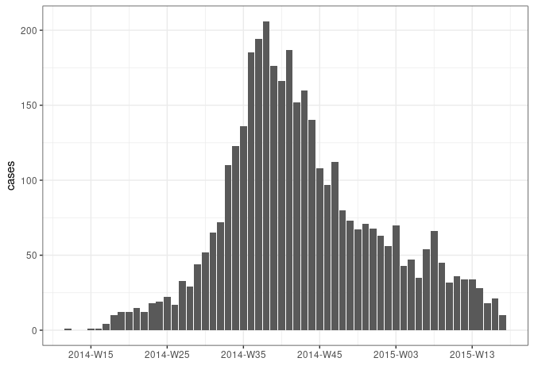

grates provides a simple and coherent implementation of grouped date classes, including:
- year-week (
as_yrwk()) with arbitrary first day of the week; - year-month (
as_yrmon()); - year-quarter (
as_yrqtr()); - year (
as_yr()); - periods (
as_period()) of arbitrary length.
These classes aim to be formalise the idea of a grouped date whilst also being intuitive in their use. They build upon ideas of Davis Vaughan and the unreleased datea package.
For each of the grouped date classes, grates also provides scales to use with ggplot2. At the same time grates has no strong dependencies so is also well suited to more minimal analytical pipelines.
Installation
You can install the development version from GitHub with:
# install.packages("remotes")
remotes::install_github("reconhub/grates")Vignette
A short illustration of grates functionality is provided in the worked example below. A more detailed introduction is available in the vignette included with the package:
Example
library(outbreaks) # for data
library(dplyr) # for data manipulation
library(ggplot2) # for plotting
library(grates)
# load some simulated linelist data
dat <- ebola_sim_clean$linelist
# group by week
weekly_dat <-
dat %>%
mutate(date = as_yrwk(date_of_infection, firstday = 2)) %>%
count(date, name = "cases") %>%
na.omit()
head(weekly_dat, 8)
#> date cases
#> 1 2014-W12 1
#> 2 2014-W15 1
#> 3 2014-W16 1
#> 4 2014-W17 4
#> 5 2014-W18 10
#> 6 2014-W19 12
#> 7 2014-W20 12
#> 8 2014-W21 15
# plot
ggplot(weekly_dat, aes(date, cases)) + geom_col() + theme_bw() + xlab("")
We make working with yrwk and other grouped date objects easier by adopting logical conventions:
dates <- as.Date("2021-01-01") + 0:30
weeks <- as_yrwk(dates, firstday = 5) # firstday = 5 to match first day of year
head(weeks, 8)
#> [1] "2021-W01" "2021-W01" "2021-W01" "2021-W01" "2021-W01" "2021-W01" "2021-W01"
#> [8] "2021-W02"
str(weeks)
#> 'yrwk' num [1:31] 2021-W01 2021-W01 2021-W01 2021-W01 ...
#> - attr(*, "firstday")= int 5
dat <- tibble(dates, weeks)
# addition of wholenumbers will add the corresponding number of weeks to the object
dat %>%
mutate(plus4 = weeks + 4)
#> # A tibble: 31 x 3
#> dates weeks plus4
#> <date> <yrwk> <yrwk>
#> 1 2021-01-01 2021-W01 2021-W05
#> 2 2021-01-02 2021-W01 2021-W05
#> 3 2021-01-03 2021-W01 2021-W05
#> 4 2021-01-04 2021-W01 2021-W05
#> 5 2021-01-05 2021-W01 2021-W05
#> 6 2021-01-06 2021-W01 2021-W05
#> 7 2021-01-07 2021-W01 2021-W05
#> 8 2021-01-08 2021-W02 2021-W06
#> 9 2021-01-09 2021-W02 2021-W06
#> 10 2021-01-10 2021-W02 2021-W06
#> # … with 21 more rows
# addition of two yrwk objects will error as it is unclear what the intention is
dat %>%
mutate(plus4 = weeks + weeks)
#> Error: Problem with `mutate()` input `plus4`.
#> x Cannot add <yrwk> objects to each other
#> ℹ Input `plus4` is `weeks + weeks`.
# Subtraction of wholenumbers works similarly to addition
dat %>%
mutate(minus4 = weeks - 4)
#> # A tibble: 31 x 3
#> dates weeks minus4
#> <date> <yrwk> <yrwk>
#> 1 2021-01-01 2021-W01 2020-W49
#> 2 2021-01-02 2021-W01 2020-W49
#> 3 2021-01-03 2021-W01 2020-W49
#> 4 2021-01-04 2021-W01 2020-W49
#> 5 2021-01-05 2021-W01 2020-W49
#> 6 2021-01-06 2021-W01 2020-W49
#> 7 2021-01-07 2021-W01 2020-W49
#> 8 2021-01-08 2021-W02 2020-W50
#> 9 2021-01-09 2021-W02 2020-W50
#> 10 2021-01-10 2021-W02 2020-W50
#> # … with 21 more rows
# Subtraction of two yrwk objects gives the difference in weeks between them
dat %>%
mutate(plus4 = weeks + 4, difference = plus4 - weeks)
#> # A tibble: 31 x 4
#> dates weeks plus4 difference
#> <date> <yrwk> <yrwk> <int>
#> 1 2021-01-01 2021-W01 2021-W05 4
#> 2 2021-01-02 2021-W01 2021-W05 4
#> 3 2021-01-03 2021-W01 2021-W05 4
#> 4 2021-01-04 2021-W01 2021-W05 4
#> 5 2021-01-05 2021-W01 2021-W05 4
#> 6 2021-01-06 2021-W01 2021-W05 4
#> 7 2021-01-07 2021-W01 2021-W05 4
#> 8 2021-01-08 2021-W02 2021-W06 4
#> 9 2021-01-09 2021-W02 2021-W06 4
#> 10 2021-01-10 2021-W02 2021-W06 4
#> # … with 21 more rows
# weeks can be combined if they have the same firstday but not otherwise
wk1 <- as_yrwk("2020-01-01")
wk2 <- as_yrwk("2021-01-01")
c(wk1, wk2)
#> [1] "2020-W01" "2020-W53"
wk3 <- as_yrwk("2020-01-01", firstday = 2)
c(wk1, wk3)
#> Error: Unable to combine <yrwk> objects with different `firstday` attributes